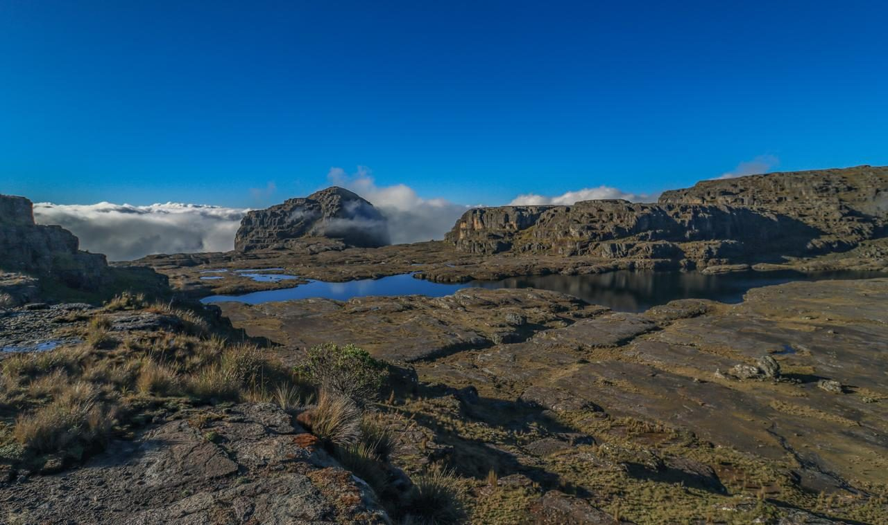
Kewiña
Viva
Restaurar los bosques de kewiña del Tunari a través del turismo de naturaleza.
Un lugar clave para el agua y la fauna de los Andes
especies amenazadas del Libro Rojo 2026 tienen fichas que citan el PN Tunari. Toca cada silueta.
Cómo leerlo: el bosque (3) capta la neblina (5) y alimenta la laguna y el arroyo (4) que bajan a los valles. Proteger 729 ha de kewiña (1) es cuidar agua y fauna de un parque de ≈3.280 km² (6).
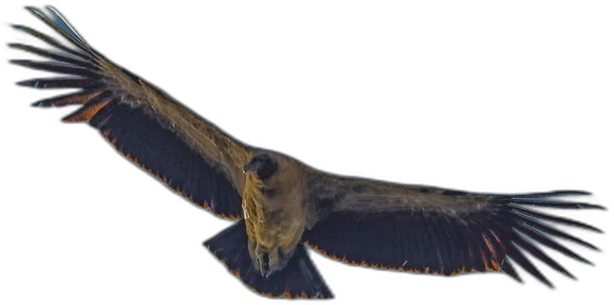
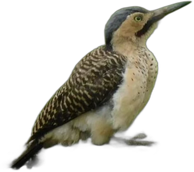
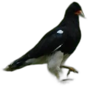
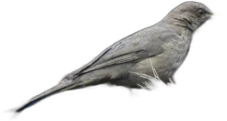
FAUNAGUA (2026); Kew (2025); Empresa Misicuni (2023); Libro Rojo de los Vertebrados de Bolivia (2026); Arrázola, Mercado y Aguirre (2010). Aves fotografiadas en Chiaraje.
La kewiña, el bosque que crece donde casi ningún árbol llega
Toca cada parte del árbol para ver sus datos.
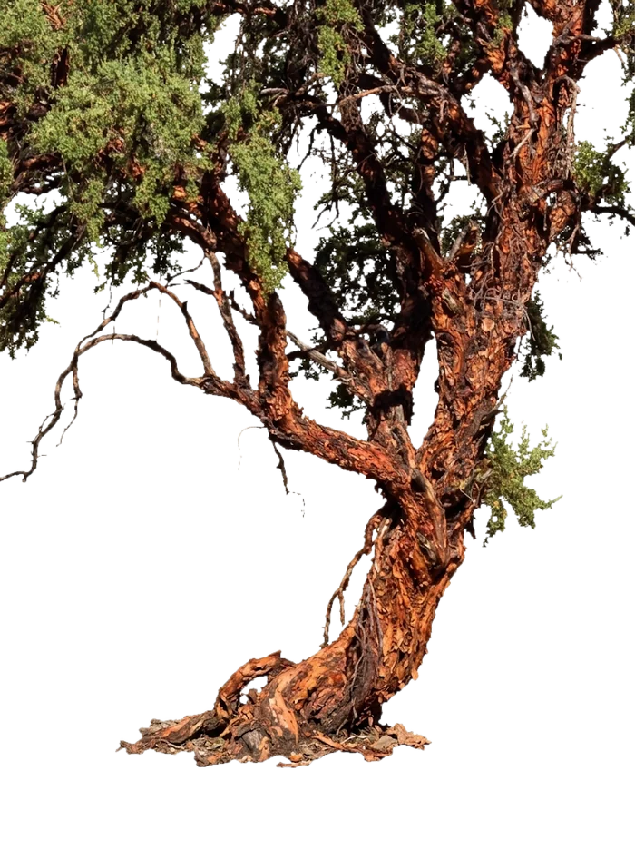
Modelo a partir de una fotografía de Vedoble.Ve. FAUNAGUA (2026); Boza y Kessler (2022).
Más del 90% de los bosques de kewiña del Tunari ya desapareció
De cada 10 bosques de kewiña que tuvo el Tunari, hoy queda menos de uno. Lo que sobrevive son relictos entre rocas.
Seis de cada diez hectáreas pueden volver a ser bosque
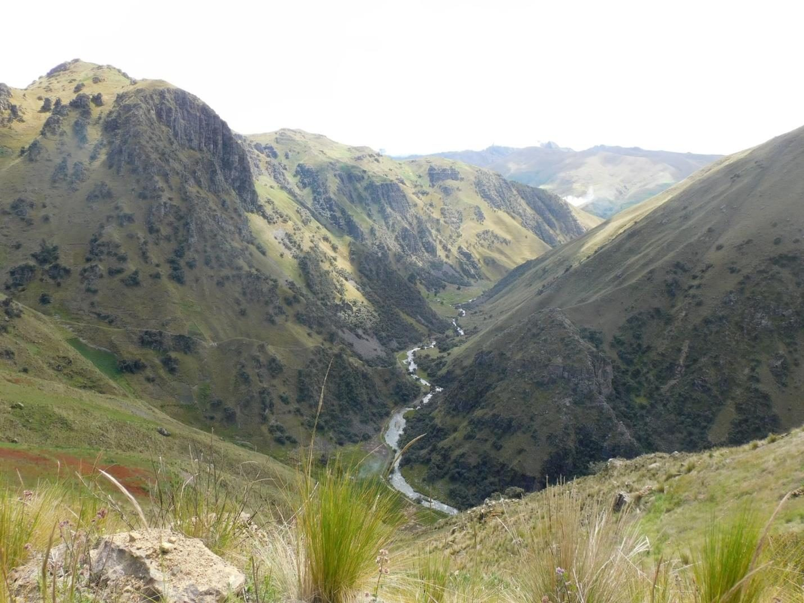
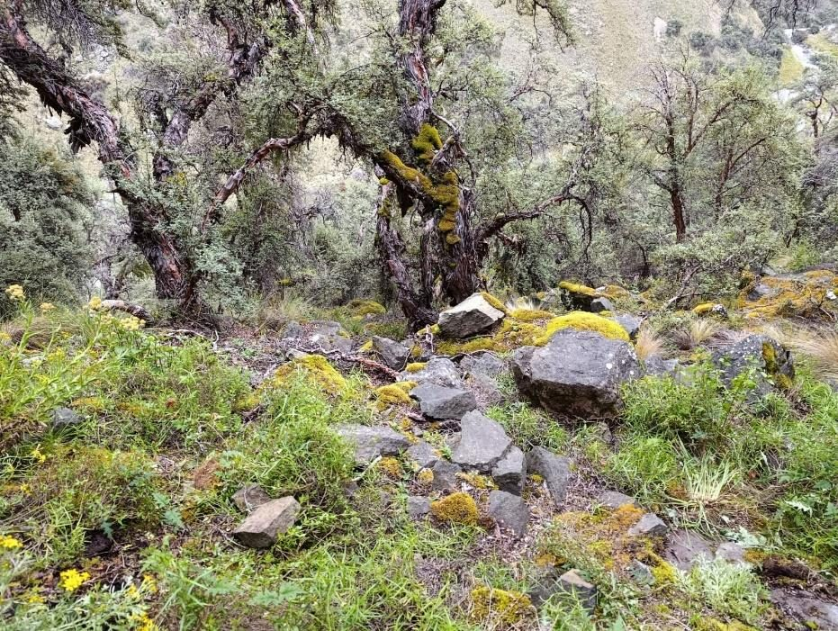
Plan de Manejo del PN Tunari, citado por Mongabay (2026); FAUNAGUA (2026); Delgado O. (2026); Viceministerio de Turismo (2024).
Un turismo de naturaleza que paga parte de la restauración del bosque
Contribuir a recuperar y conservar los bosques de kewiña del PN Tunari y a diversificar los ingresos de las familias de Chiaraje, con un modelo de liderazgo comunitario que destine parte de sus ingresos al bosque y pueda adaptarse a otras comunidades.
Cada visita reparte su valor entre las familias y el bosque
Cómo leerlo: de cada €100 de tarifa, €55 quedan en las familias, €25 vuelven al bosque (unas 29 kewiñas establecidas) y €20 pagan la venta.
Reparto: propuesta inicial, a validar con la comunidad (Anexo 1). FONABOSQUE: Bs 6,50 por plantín establecido.
Dos experiencias que solo existen si el bosque sigue en pie
Naturaleza y restauración
- Centro Warmi Kewiñas y vivero comunal
- Sectores de bosque elegidos con la comunidad
- Visita interpretativa de la restauración
Naturaleza y aviturismo
- Monterita cochabambina, kewiñero y cóndor
- Guiado especializado y guías locales
- BirdQuest y DOF Travel ya visitan el Tunari
Calendario del territorio
Hay algo que ver todo el año: aves de abril a noviembre, siembra con las lluvias y tres fiestas comunales.
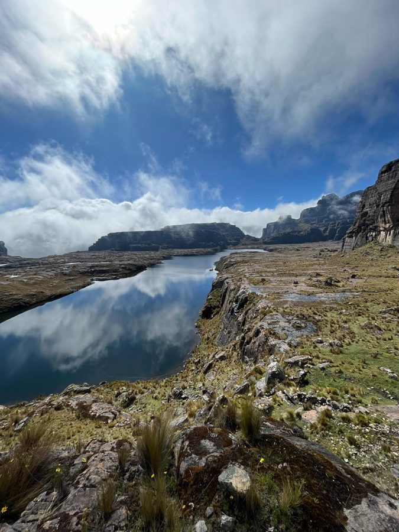
Lagunas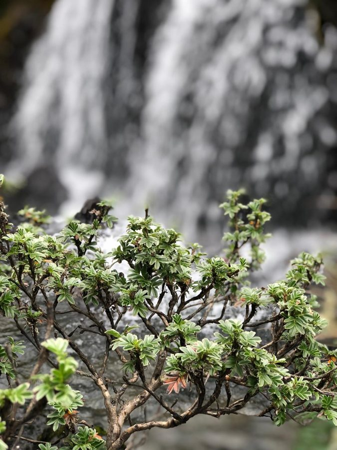
Cascadas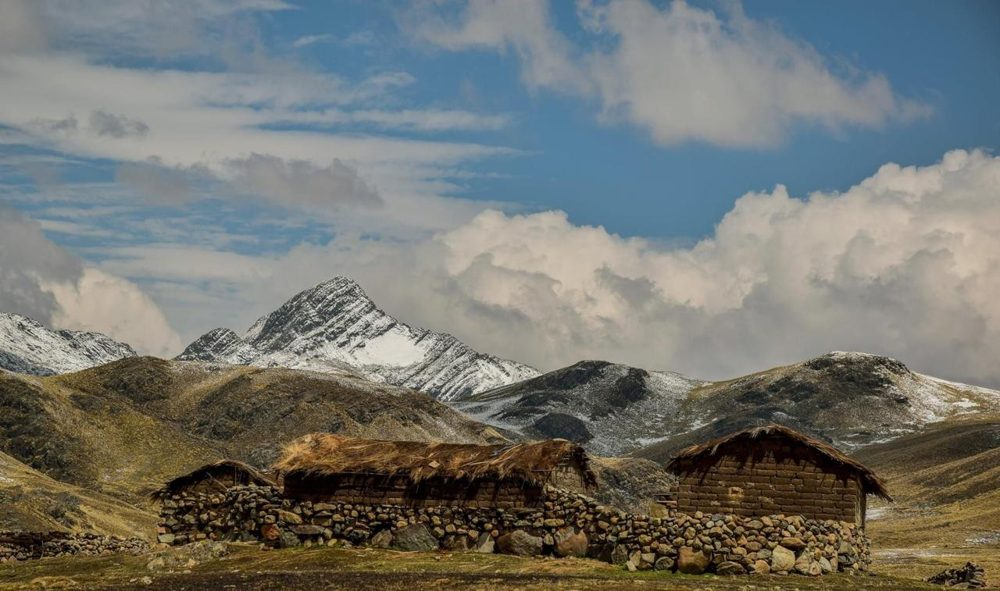
Paisaje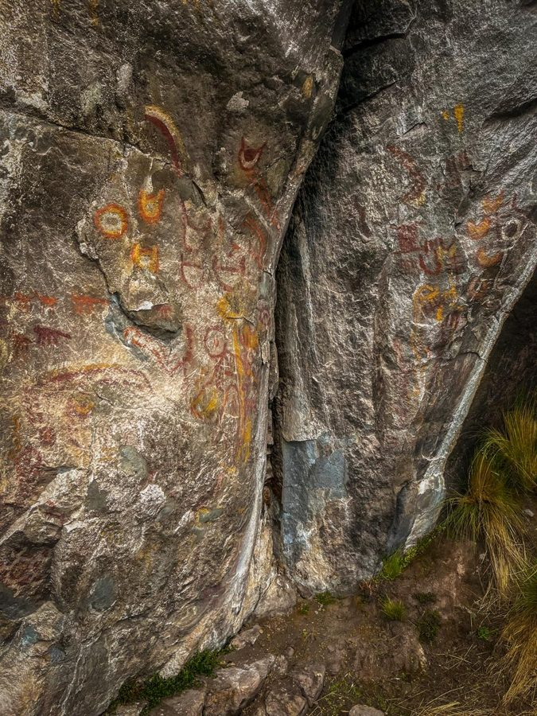
Arte rupestre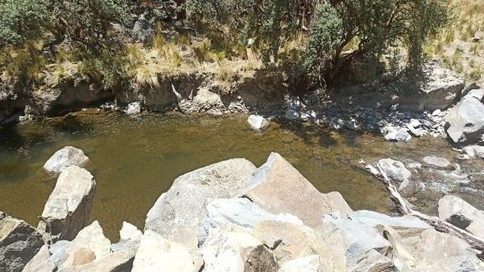
Río Incachaca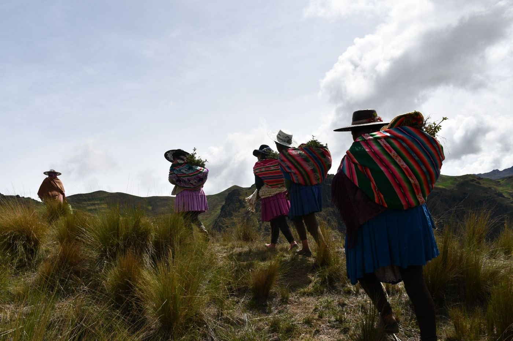
Restauración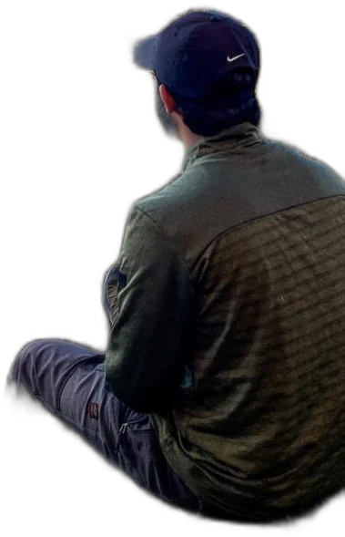
Del aeropuerto de Cochabamba a Chiaraje en 3 a 5 horas
La cumbre, a unos 4.500 m, es el punto más alto del viaje; desde Peñas se baja por la vertiente norte hasta el Centro, a 3.900 m.
Seis actividades, del diseño a la decisión
Diseñar los circuitos
- Qué se hace
- Evaluar atractivos, acceso y sensibilidad ambiental con la comunidad.
- Resultado
- Dos circuitos con recorridos, cupos y reglas.
Adecuar el Centro
- Qué se hace
- Mejoras de bajo impacto; evaluar energía renovable.
- Resultado
- Centro listo para orientar e interpretar.
Preparar a los prestadores
- Qué se hace
- Acordar servicios y pagos; formar en guiado e interpretación.
- Resultado
- Prestadores formados y materiales.
Operar las salidas
- Qué se hace
- Costear, promocionar y operar; registrar costos y pagos.
- Resultado
- 4 salidas pagadas y punto de equilibrio.
Reinvertir en el bosque y monitorear
- Qué se hace
- Aplicar el aporte al cuidado de plantaciones o relictos; seguir 2 parcelas.
- Resultado
- Un ciclo de reinversión verificado.
Continuidad y réplica
- Qué se hace
- Acordar con Chiaraje qué continúa; evaluar con una vecina.
- Resultado
- Decisión de continuidad e Icari evaluada.
El hilo verde del piloto
- 100.000plantines al año en el vivero de las Warmi Kewiñas
- 119.000plantines acordados por 5 comunidades, 2026–2027
- Dic–febsiembra con las lluvias
- Actividad 5el aporte turístico paga el cuidado de lo plantado
- 2 parcelasverifican si el bosque se recupera
Seis resultados que se pueden contar y verificar
Ingresos registrados
por hogar, con participación de mujeres y jóvenesAcción de conservación
cuidado de plantaciones, protección de relictos o brigadas contra incendiosComunidad vecina
evaluada para sumarse; Icari primeroTodo se mide con los registros de cada salida y con las parcelas en campo: al cierre se sabrá con datos reales si el modelo funciona.
Nota conceptual, sección 4. «100%» indica que todos los ingresos de las salidas se registran por hogar.
Las Warmi Kewiñas lideran el componente comunitario
25 mujeres de Chiaraje, de 18 a 68 años, organizadas desde octubre de 2022 para cuidar los bosques de kewiña. Producen plantines y reforestan; en el piloto orientan el diseño de las visitas y deciden cómo se reparten los beneficios y a dónde va el aporte al bosque.
Su papel en las seis actividades
Lo que pueden ofrecer al visitante
- Gastronomía tradicional
- Panificación
- Artesanías
- Transformación de materias primas
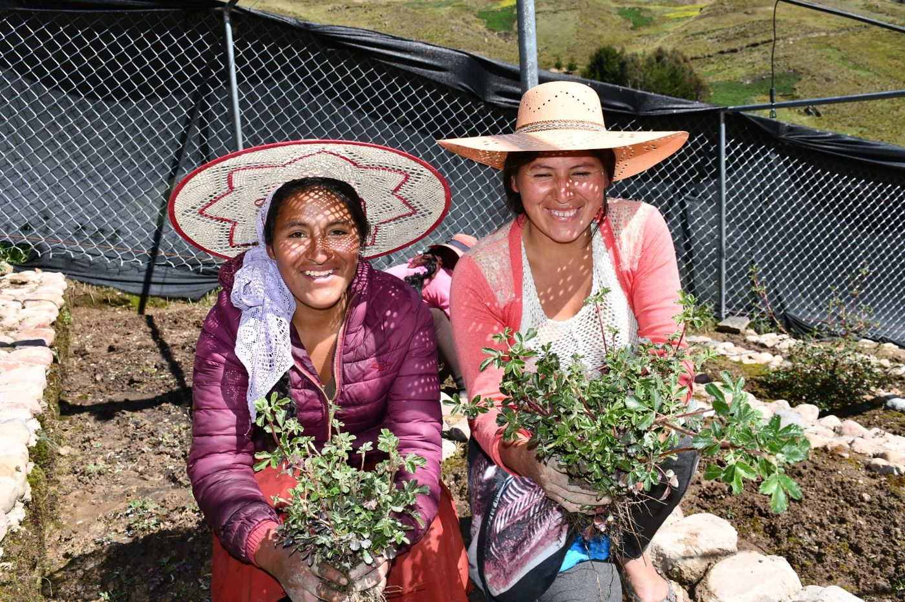
Vivero comunal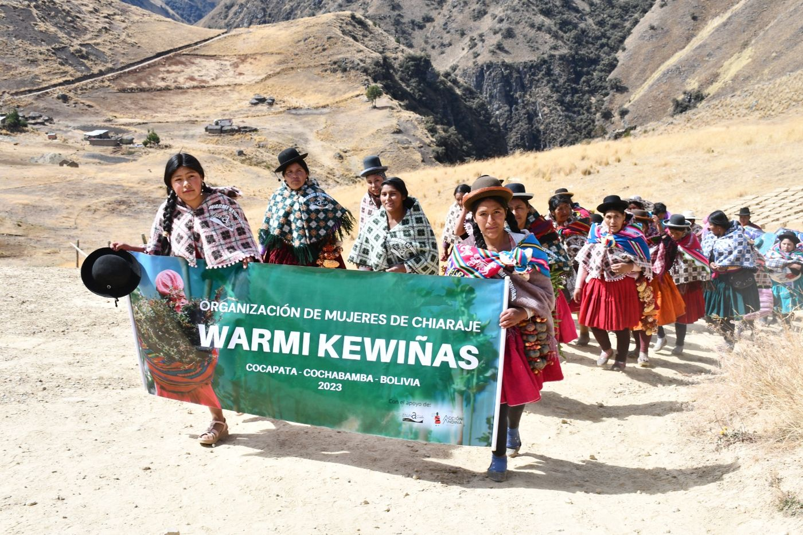
Desde 2022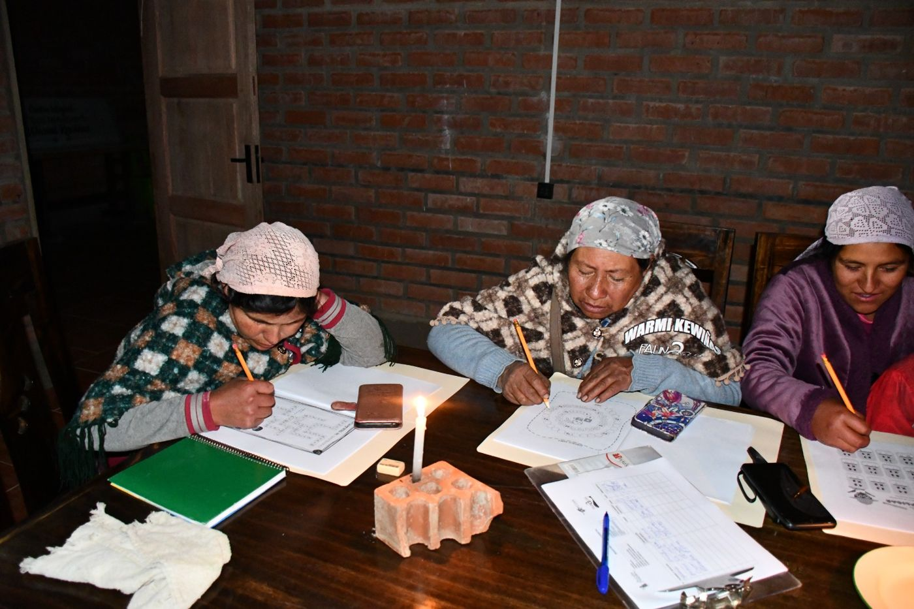
Alfabetización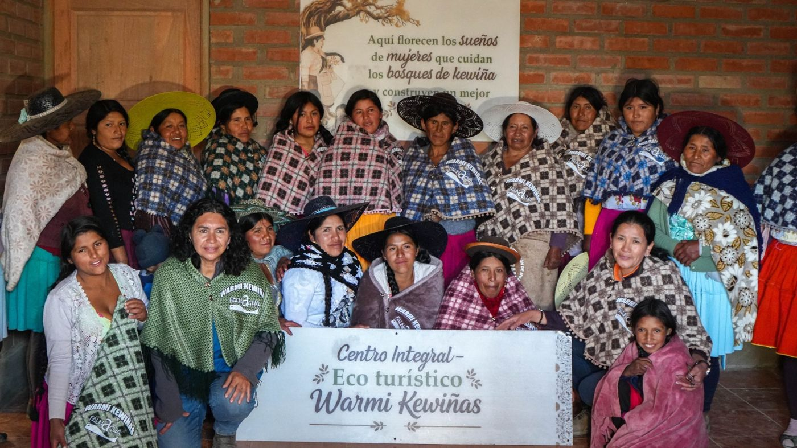
Su CentroUna alianza que ya trabaja en el territorio
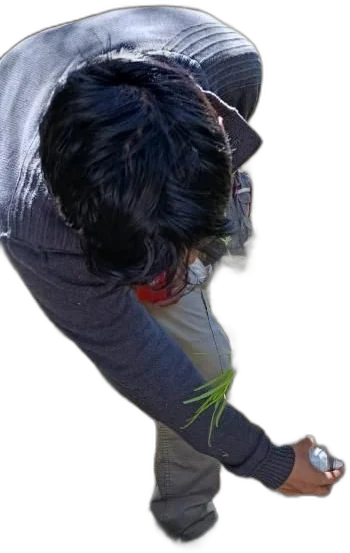
FAUNAGUA
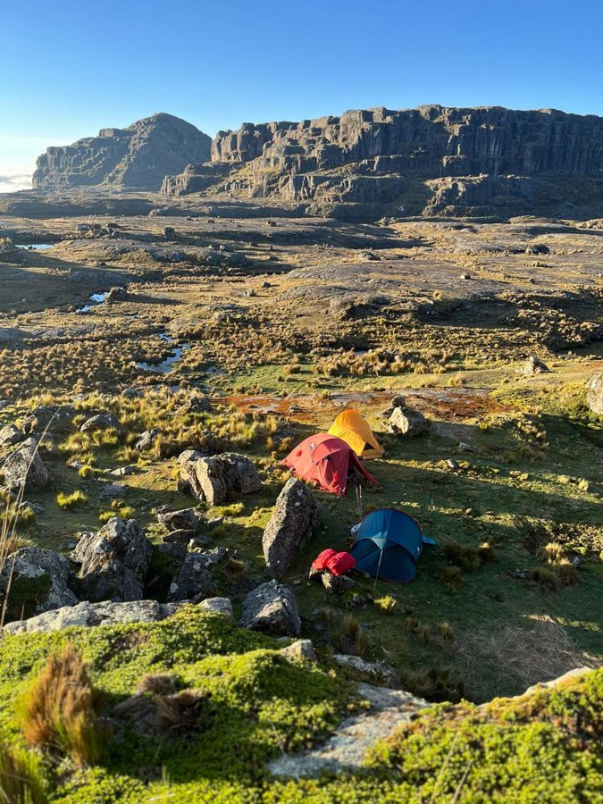
HOWWE
Verificación, riesgos controlados y una base que ya existe
Nota conceptual, secciones 5 a 9.
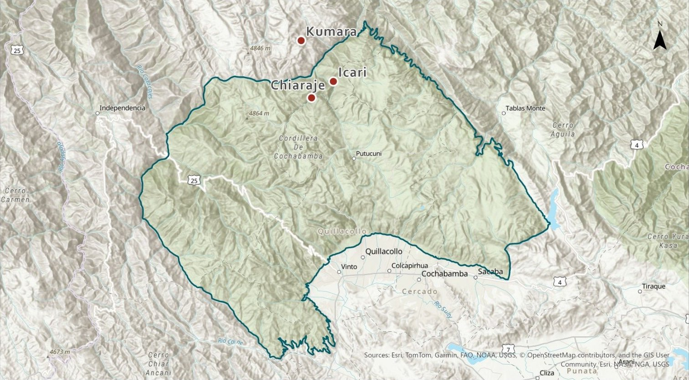
Mapa SIG del proyecto (2026): OpenStreetMap, límites de áreas protegidas y Esri. Pasa o toca cada escala.
Que el bosque que siembra agua tenga quien lo cuide, y quien lo pague
- Dos experiencias de turismo de naturaleza probadas con salidas pagadas
- Un primer ciclo de reinversión en el bosque, verificado en campo
- Ingresos para las familias, con las Warmi Kewiñas al frente
- Un modelo listo para Icari, el Tunari y los Andes de Bolivia